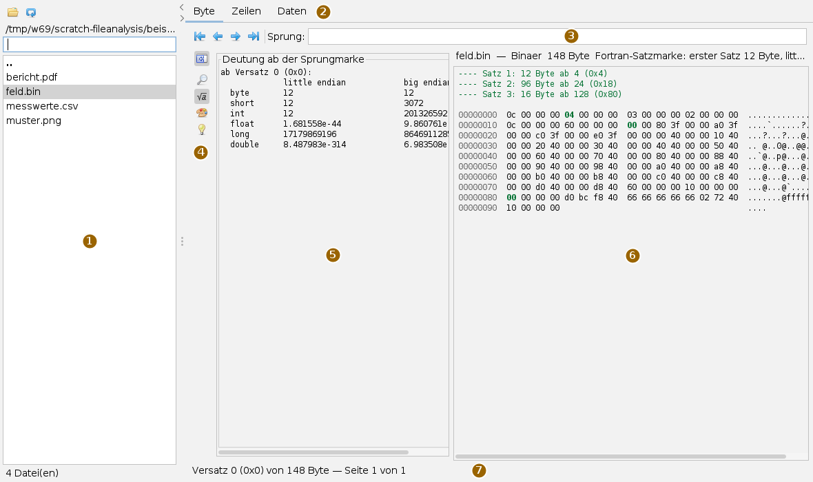
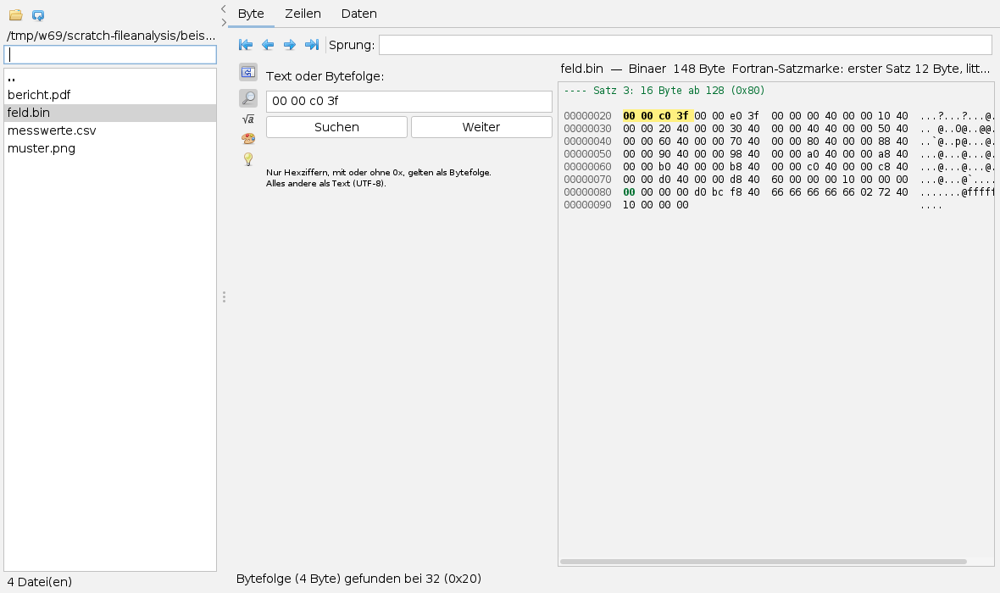
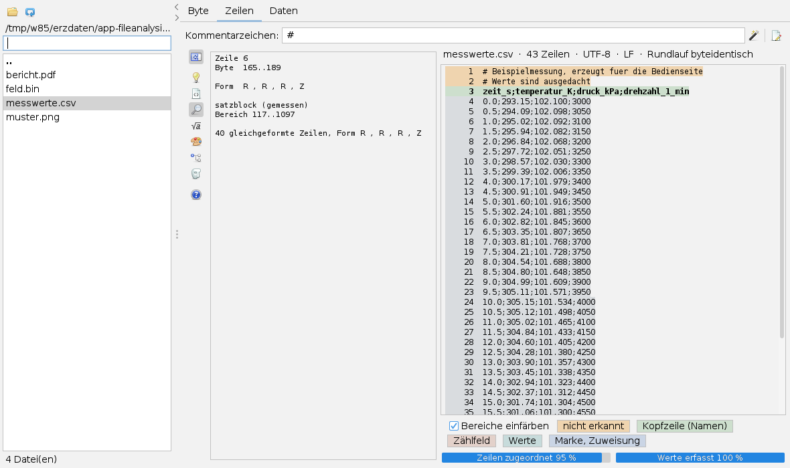
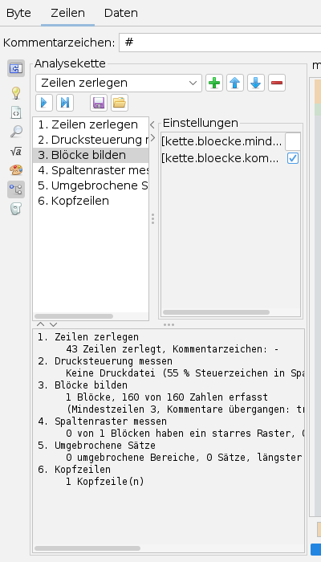
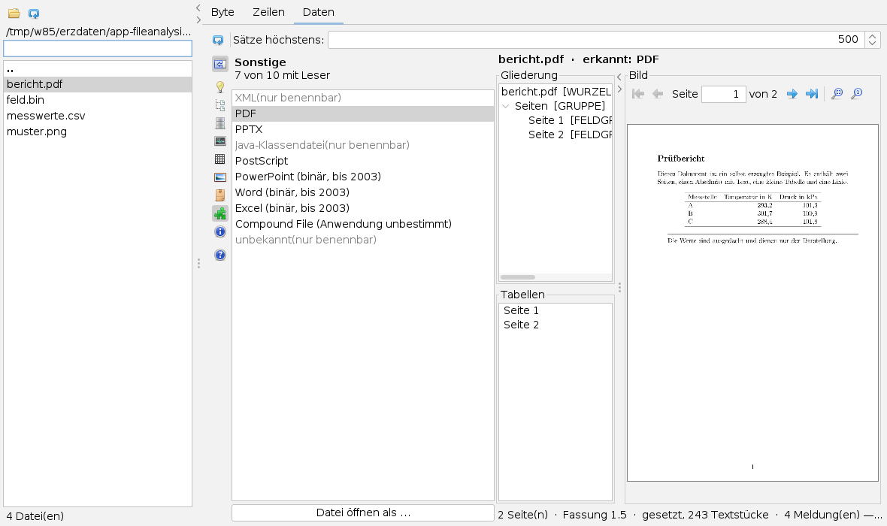

Dateien analysieren
Bedienseite, Stand 06.10.2026. Wie man einen Ordner durchsieht, die Bytes einer Datei deutet und durchsucht, eine Textstruktur erkennen lässt und Dokumente und Bilder ansieht. Die Bilder sind Bildschirmfotos der App mit selbst erzeugten Beispieldateien.
Das Fenster
Die App öffnet man im Menü Anwendungen mit Datei ansehen oder mit Alt+A. Der Reiter heißt Dateianalyse. Einstellungen stehen in Karten; nur zum Wählen von Ordnern und Dateien erscheint der übliche Dateidialog.

Dieselbe Datei lässt sich in drei Reitern ansehen: Byte zeigt, was wirklich in der Datei steht, Zeilen gliedert eine Textdatei nach ihrer Form, Daten zeigt, was die eingebauten Formatleser daraus machen. Jeder Reiter hat seine eigene Leiste. Gerechnet wird nur der Reiter, der vorn liegt; die anderen holen es nach, wenn man auf sie schaltet. Die Ansicht schreibt nichts in die gelesene Datei.
Der Arbeitsordner
| Symbol | Tooltip | Was geschieht |
|---|---|---|
 | Arbeitsordner wählen | Ordner im Dateidialog wählen. |
| Ordner neu einlesen | Die Liste neu aufbauen, etwa nach einer neuen Datei. |
Die Liste zeigt alle Dateien des Ordners, ohne Filter nach Endung, darüber die Unterordner (fett) und .. für den Ordner darüber. Ein Klick auf einen Ordner betritt ihn. Eine Datei auswählen heißt: Sie wird im Reiter analysiert, der gerade vorn liegt. Das Feld über der Liste schränkt die Dateien auf Namen ein, die den eingegebenen Text enthalten; Ordner bleiben stehen. Unten steht die Zahl der Dateien. Unterordner werden nicht durchsucht, und mehr als 5000 Einträge zeigt die Liste nicht. Die Pfeile am Teiler klappen den Arbeitsordner ein und wieder aus.
Typischer Ablauf
- Mit Arbeitsordner wählen den Ordner mit den unbekannten Dateien öffnen.
- Eine Datei in der Liste anklicken. Im Reiter Byte nennt die Zeile über den Bytes Größe, erkannte Art und, wenn vorhanden, Fortran-Satzmarken.
- Für eine Textdatei auf Zeilen schalten: Kommentarzeichen eintragen, die Färbung und die Karten Befund und Regel lesen.
- Auf Daten schalten: Liest ein eingebauter Leser das Format, stehen dort Gliederung, Tabellen, Seiten oder das Bild.
- Mit den Pfeiltasten in der Liste zur nächsten Datei gehen. Die letzten sechs Ergebnisse je Reiter bleiben im Speicher; ändert sich eine Datei in Größe oder Zeitstempel, wird neu gerechnet.
Reiter Byte
| Symbol | Tooltip | Was geschieht |
|---|---|---|
| An den Anfang der Datei | Seite ab Versatz 0. | |
| Eine Seite zurück | 1024 Byte zurück. | |
| Eine Seite vor | 1024 Byte vor. | |
| An das Ende der Datei | Die letzten 1024 Byte. | |
 | Werkzeugleiste ein- und ausklappen | Karte aus- und wieder einblenden; steht in allen drei Leisten. |
| Suche | Text oder Bytefolge suchen. | |
 | Deutung | Die Bytes ab der Sprungmarke als Zahlen. |
 | Ansicht | Einfärbung an oder aus. |
 | Anleitung | Kurzanleitung zum Arbeitsordner und zum Reiter. |
 | Hilfe — Formatdokumentation | Die Formatdokumentation in voller Breite. |
Die Bytes stehen seitenweise, 1024 Byte je Seite und 16 je Zeile: links der Versatz (hexadezimal), in der Mitte die Bytes, rechts die druckbaren Zeichen. Gelesen wird nur die angezeigte Seite. In das Feld Sprung: schreibt man einen Versatz, dezimal oder mit 0x hexadezimal, und drückt die Eingabetaste; die Ansicht beginnt dann an der Zeile, in der der Versatz liegt. Die Ortszeile unten nennt Versatz, Dateigröße und Seite.
Hat die Datei Fortran-Satzmarken, stehen über den Bytes die Sätze mit Länge und Anfang, und das erste Byte jedes Satzes ist grün. Reißt die Kette der Marken, hört das Raster auf.
Die Karte Deutung zeigt die Bytes ab dem Anfang der angezeigten Seite, also ab der Sprungmarke, als byte, short, int, float, long und double, little endian und big endian untereinander. NaN und unendlich stehen ausgeschrieben da. Im Bild ergibt der Anfang von feld.bin little endian 12: die Länge des ersten Satzes; big endian wäre es 201326592.

00 00 c0 3f (die Zahl 1,5 als float, little endian): Treffer bei Versatz 32.- Karte Suche öffnen und unter Text oder Bytefolge: den Suchbegriff eintragen. Nur Hexziffern, mit oder ohne
0x, gelten als Bytefolge; alles andere wird als Text (UTF-8) gesucht. - Suchen drücken (oder die Eingabetaste). Gesucht wird ab der angezeigten Stelle; der Treffer ist gelb hinterlegt, die Ortszeile sagt, wonach gesucht wurde und wo der Treffer liegt.
- Weiter sucht den nächsten Treffer. Findet sich bis zum Dateiende keiner mehr, fängt die Suche vorn wieder an.
In der Karte Ansicht schaltet der Haken Satzgrenzen und Treffer einfaerben die Farben ab, etwa zum Herauskopieren der Bytes.
Reiter Zeilen

| Symbol | Tooltip | Was geschieht |
|---|---|---|
 | Struktur neu erkennen — die Regeln sind geraten, nicht gelesen | Erkennung mit den eingetragenen Kommentarzeichen. |
| Formatbeschreibung entwerfen (nur zum Herauskopieren, es wird nichts gespeichert) | Entwurf und Rundlauf in die Karte Entwurf. | |
| Anleitung | Kurzanleitung. |
| Hilfe — Formatdokumentation | Die Formatdokumentation in voller Breite. |
 | Gliederung | Der erkannte Regelbaum. |
| Befund | Was an der Zeile unter der Schreibmarke gemessen wurde. | |
| Regel | Was daraus über den Schreiber behauptet wird. |
| Entwurf | Die entworfene Formatbeschreibung. |
| Analysekette | Die Erkennung Schritt für Schritt. | |
| Anonymisieren — Zahlen unkenntlich machen | Anonymisierte Kopie schreiben. |
- Eine Textdatei wählen. Ist die Datei binär oder leer, läuft keine Erkennung; statt der Zeilen steht dann die Messung da (Größe, Anteil druckbarer Zeichen, Nullbytes, erkannte Art).
- Unter Kommentarzeichen: die Zeichen eintragen, mit denen Kommentarzeilen beginnen, mehrere durch Komma getrennt, etwa
#,!. Ohne Angabe gilt keine Zeile als Kommentar. Eingabetaste oder Struktur neu erkennen. - Jede Zeile bekommt die Farbe der Regel, die sie beansprucht. Unbekanntes fällt auf, Erkanntes liegt blass; die Legende unter dem Text nennt die Arten. Die Kopfzeile ganz oben sagt Zeilenzahl, Zeichensatz, Zeilenende und ob der Rundlauf byteidentisch ist.
- In den Text klicken: Befund zeigt Zeilennummer, Bytebereich, Form und die gemessene Regel; Regel zeigt die Behauptung über den Schreiber. Die beiden stehen getrennt, damit man die Behauptung prüfen kann.
- Die Balken unten: Zeilen zugeordnet und Werte erfasst, getrennt, weil eine Datei fast ganz zugeordnet sein und trotzdem die entscheidende Kopfzeile verfehlen kann.
- Formatbeschreibung entwerfen schreibt eine Formatbeschreibung in die Karte Entwurf und prüft sie gleich im Rundlauf an der Datei („BYTEIDENTISCH“ oder die erste abweichende Stelle). Es wird nichts gespeichert; der Text ist zum Herauskopieren.
Erkannt werden höchstens die ersten 4 MB einer Datei; die Kopfzeile sagt es, wenn gekürzt wurde.
Anonymisieren
Die Karte Anonymisieren — Zahlen unkenntlich machen schreibt eine Kopie, in der jede Ziffer durch eine andere ersetzt ist, Zeichen für Zeichen gleich lang. Spalten, Feldbreiten und Zahlgestalt bleiben, die Werte sind weg; das ist nicht umkehrbar. auch Namen ersetzen bildet Bezeichner gleichbleibend auf gleich lange Kunstnamen ab, Zählfelder im Klartext lassen lässt alleinstehende ganze Zahlen stehen. Anonymisierte Kopie schreiben legt die Kopie als name-anonym.endung in denselben Ordner. Gibt es sie schon, wird nichts geschrieben.
Fließtext in Kommentaren, Einheiten, Anlagen- und Rechnernamen werden nicht erkannt. Die Kopie vor dem Weitergeben ansehen.
Die Analysekette

Die Karte Analysekette zerlegt die Erkennung in Schritte: Zeilen zerlegen, Drucksteuerung messen, Blöcke bilden, Spaltenraster messen, Umgebrochene Sätze, Kopfzeilen.
| Symbol | Tooltip |
|---|---|
 | Schritt anhängen |
| Schritt nach oben | |
| Schritt nach unten | |
 | Schritt entfernen |
 | Ganze Kette ausführen |
| Bis zum gewählten Schritt ausführen | |
 | Kette speichern |
| Kette laden |
Einen Schritt fügt man an, indem man ihn im Auswahlfeld wählt und Schritt anhängen drückt. Wählt man einen Schritt in der Liste, stehen rechts unter Einstellungen seine Werte. Unten erscheinen nach einem Lauf die Meldungen jedes Schritts. Nur ein Lauf der ganzen Kette färbt die Zeilen neu; Bis zum gewählten Schritt ausführen zeigt nur die Meldungen bis dorthin. Die Kette lässt sich als Datei mit der Endung .kette speichern und wieder laden.
Reiter Daten

| Symbol | Tooltip | Was geschieht |
|---|---|---|
| Dieselbe Datei noch einmal lesen | Neu lesen, etwa nach geänderter Satzgrenze. | |
| Anleitung | Kurzanleitung. |
| Hilfe — Formatdokumentation | Die Formatdokumentation in voller Breite. |
| Behälter | Je Formatgruppe eine Karte mit ihren Formaten und dem Knopf Datei öffnen als … | |
 | Datenbanken | |
| Messdaten | ||
 | Netze und Felder | |
 | Bilder | |
| Packung | ||
| Sonstige | ||
| Befunde | Was der Leser zu melden hatte. |
Der Leser wird nach dem Inhalt der Datei gewählt, nicht nach der Endung. Die Zeile oben nennt das erkannte Format. Danach steht die Karte der passenden Formatgruppe vorn, das Format ist darin markiert; scheitert das Lesen, steht die Karte Befunde vorn. Formate mit dem Zusatz „(nur benennbar)“ erkennt der Baukasten, liest sie aber nicht.
Links stehen Gliederung und Tabellen, rechts der Inhalt. Je nach Format ist das:
- Tabellen (Datenbanken, Messdaten, Netze, Behälter): die Sätze der gewählten Tabelle. Geholt werden höchstens so viele, wie unter Sätze höchstens: steht (Vorgabe 500, 10 bis 100 000); die Fußzeile sagt, wenn abgeschnitten wurde.
- Bilder: das Bild, eingepasst und nie über 100 % vergrößert, durchsichtige Stellen auf einem Schachbrett. Bei mehreren Teilbildern wird das erste gezeigt.
- PDF, PostScript, PPTX: links die Seiten oder Folien, rechts die gezeichnete Seite mit der Blätterleiste (Erste Seite, Vorige Seite, Seitenfeld, Nächste Seite, Letzte Seite). Ein gescanntes PDF wird als Bild gezeigt. Bei einem gesetzten PDF meldet jede Seite in den Befunden, was gezeichnet ist und dass Verläufe, Muster und Transparenz fehlen.
- HDF4, GIF: Ein Klick in die Gliederung zeigt rechts die Struktur des Knotens mit Name, Art, Kinderzahl und Eigenschaften.
Über einem Bild oder einer Seite stehen Einpassen und  Originalgröße (100 %). Ein vergrößertes Bild verschiebt man durch Ziehen mit der Maus.
Originalgröße (100 %). Ein vergrößertes Bild verschiebt man durch Ziehen mit der Maus.
Sagt die Erkennung nicht, was man erwartet, wählt man in einer Gruppenkarte das vermutete Format und drückt Datei öffnen als …. Nach der Dateiwahl wird die Datei mit genau diesem Leser gelesen; seine Meldung in den Befunden sagt, woran es scheitert.
Elemente herausschreiben
Ein Rechtsklick in die Gliederung öffnet ein Menü. Bei einem PDF: Text extrahieren… schreibt den Text der Datei (Wurzel) oder einer Seite in eine Textdatei, Bilder extrahieren… die Bilder als PNG in einen Ordner; ein Bild, das sich nicht umsetzen ließ, nennt die Fußzeile. Bei einer PPTX-Datei wählt man eine Form in der Gliederung; Element extrahieren… schreibt ein Bild unverändert heraus, eine Tabelle als CSV, sonst den Text der Form. Bei Diagrammen und SmartArt ist der Eintrag gesperrt. Ziel und Name wählt man im Dateidialog.
Formatdokumentation
Hinter einem Format in einer Gruppenkarte steht ein kleines Fragezeichen, wenn es dazu eine Formatdokumentation gibt (Tooltip „Zum Abgleich von … in der Hilfe“). Ein Klick darauf zeigt die Dokumentation aus framework-fileformats in voller Breite, mit einer Auswahl der Dokumente oben. Hilfe schliessen und zurück zur Datei führt zurück.
Was gespeichert wird
Beim Sichern des Arbeitsbereichs merkt sich die App nichts, auch nicht den Arbeitsordner; nach einem Neustart wählt man ihn wieder. Die gelesene Datei wird nie verändert. Geschrieben wird nur auf ausdrücklichen Knopfdruck und immer in eine neue Datei: die anonymisierte Kopie, die herausgeschriebenen Texte und Bilder und die gespeicherte Analysekette.
Tastatur und Maus
Alt+Y öffnet die App. Im Arbeitsordner wählen die Pfeiltasten die nächste Datei, die sofort analysiert wird; einen Ordner betritt man mit Klick oder Eingabetaste. Die Eingabetaste löst im Sprungfeld den Sprung aus, im Suchfeld die Suche, im Feld Kommentarzeichen: die neue Erkennung und im Seitenfeld der Blätterleiste den Wechsel auf die Seite.
In einem Bild zoomt das Mausrad (je Raste Faktor 1,15, zwischen 0,05 und 20). Bei Seiten und Folien rollt das Rad die Seite, am Rand blättert es weiter; Strg+Rad zoomt.
Grenzen
- Sprünge und Treffer setzen die Ansicht auf den Anfang der 16-Byte-Zeile. Die Deutung beginnt deshalb immer an einer durch 16 teilbaren Stelle, nicht an einem einzelnen Byte.
- Die Suche läuft nur vorwärts, und nur der aktuelle Treffer ist gefärbt.
- Die gezeichneten Seiten und Folien sind Auswertungen, keine vollständigen Wiedergaben; was fehlt, steht in den Befunden.
- Die Zeilenerkennung untersucht höchstens 4 MB, die Datenansicht holt höchstens 100 000 Sätze je Tabelle.
Symbole: Fugue Icons von Yusuke Kamiyamane, Lizenz CC BY 3.0.